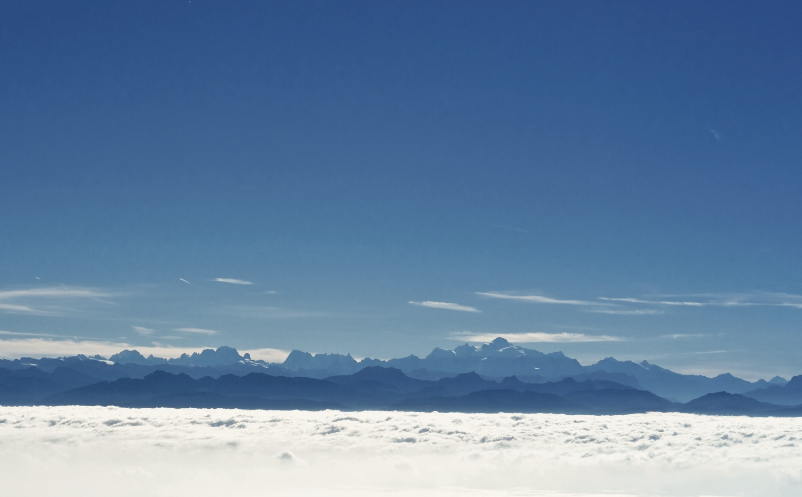
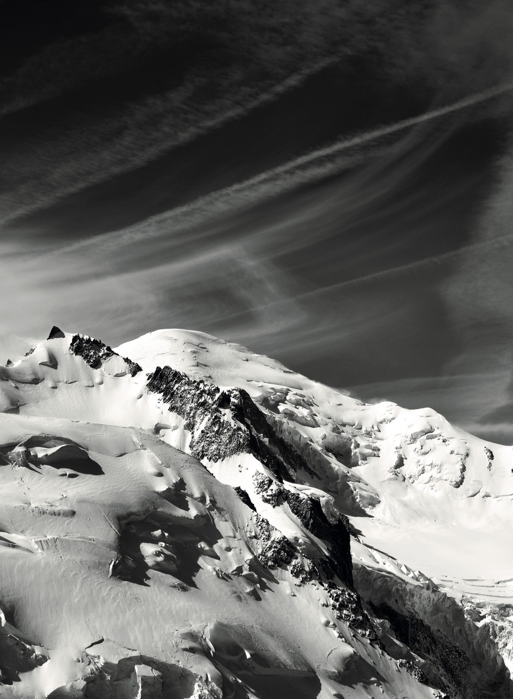

Enter a search (autocomplete) and select from the pulldown

Alpine region
A guide to the area, population and cities in the Alps - Read more


Highest mountains
A guide to the highest mountains in the Alps - Read more
Enter a search (autocomplete) and select from the pulldown
A guide to the area, population and cities in the Alps - Read more
A guide to the highest mountains in the Alps - Read more
The highest road pass in the Alps - Read more
35 kilometres of demonic, twisting asphalt in France's Alpes-Maritimes - Read more

A French fort that overlooks the Col de la Traversette above the French and Italian borders - Read more
A trail so beloved by Friedrich Wilhelm Nietzsche that they named it after him - Read more
The Emperor's legendary march from the Côte d'Azur back to the throne of France - Read more

One of six museums founded by legendary climber Reinhold Messner - Read more
Luxury apartments in the South Tyrol - Read more
The densely packed principality on the Côte d'Azur - Read more

Founded by Prince Albert and overseen by Jacques Cousteau, a stunning mueseum overlooking the sea - Read more
A five star hotel at the foor of the Fleula Pass in Davos, Switzerland - Read more
Two villages with an enviable view of the Rhone Valley - Read more

One of the world's most iconic roads that was immortalised in the 1964 film Goldfinger - Read more
A review of the hotel in Andermatt Reuss - Read more

The railway from Montreux offers stunning views of Lake Geneva & the Swiss Alps - Read more

Stockeralpers pass that went from a smuggler's den to an all-year trade route - Read more